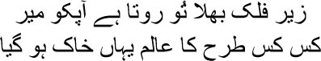
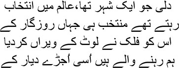
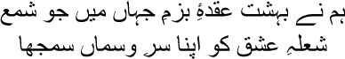

43

You bemoan your own fate under the sky, Mir
So many different worlds have burnt to ashes here
any memories came back to me, Manto bhai, as I looked at Dilli, the city of the dead. We didn’t see those days for ourselves, we only heard about them from generations of noblemen who had passed the stories down through the centuries. All reality becomes fiction one day. Each of the stories was like a painting in Emperor Jahangir’s gallery—such colours, such lustre, such subtlety!—like an extraordinary world reflected in a drop of water. The Mughals didn’t just create an empire or plunder this country of its riches, they also gave birth to an etiquette, a tehzeeb. It was this tehzeeb that taught us that no one can be noble without manners and morals, adab and akhlaq. The Sufi poet Khwaja Mir Dard used to say that his father was the last word in adab. His grace was evident in his external appearance. When he rode horseback along Delhi’s roads, acquaintances and strangers alike used to touch his feet reverentially. The ‘Salaam Aleikum’ with which we greet one another is not just a phrase; it prays for the lord’s peace to be rained upon the recipient. Just consider the centuries of adab contained in this greeting. To me, the death of Dilli was the death of adab and akhlaq.
Some Englishmen had suggested blasting the fort off the face of the earth with their cannons and razing the Jama Masjid to the ground. A palace and a church named after Queen Victoria would be erected in their places. Even if they did not go so far, the Lahori Gate and the Dilli Gate were renamed for Victoria and Alexander. They converted the entire fort into a camp for the army. The Jama Masjid and the Ghaziuddin Madrassa met the same fate. The Fatehpuri Mosque was sold off to a Hindu businessman. A bread-making plant was set up inside the Zinatul Mosque. Do you know what I could see from my dark cell? There, Qila Mubarak was ready. In the official documents and on people’s lips, the palace fort was referred to as Qila Mubarak—the fort of good deeds. April 19, 1648. Emperor Shahjahan stepped over the threshold of the Daulatkhana-e-Khas. The date had been fixed by astrologers. We cannot even imagine the nature of the celebrations, Manto bhai. Innumerable musicians and singers had come from all over Hindustan and Kashmir and Persia. The furniture and carpets with which the clerk Sadaullah Khan had adorned the room were apparently worth sixty thousand rupees. I’m told he wrote a poem and had it carved on a wall of the chamber of dreams, the khwabgah. You know what the khwabgah was, don’t you? The rooms where the emperor slept and dreamt. The bedroom was named the chamber of dreams; just think of the fancies entwined with this name, Manto bhai.
A long wall of stone encircled Shahjahanabad. Seven large gates were made for entry and exit—Kashmiri, Modi, Kabuli, Lahori, Ajmeri, Turkmani, and Akbarabadi. The Lahori and the Akbarabadi gates were the two principal ones. Emperor Shahjahan had erected statues of a pair of elephants at these gates. Emperor Aurangzeb had the statues demolished. You know the number of storms that Dilli had to weather after that, Manto bhai. The city was stripped bare by the invasions of Nadir Shah and of the Marathas. Mir sahib wrote:

Dilli was the chosen city of the world
The finest people of the world lived here
Time has ravaged and laid the city to waste
I am a resident of this city of broken walls
The British were even more cruel, my brothers. In November 1858, the British government took over the administration of this country from the East India Company. I had been seeing a comet in the western sky for quite a few days after sunset, Manto bhai. My heart trembled with foreboding. I realized that our end was imminent. Governor General Lord Canning took over the administration on behalf of the Queen of England. Hai Allah! I knew that their aim now would be to wipe out Shahjahanabad and its culture. The white-skinned people would now remake the city according to their own needs; and we, broken men, would remain like wounded shadows.
My only friend then was a mangy dog from the locality. It used to be a guard dog for one of the families which had run away. Emaciated and flea-ridden, its fur falling off. It was lying outside my front door one day, whimpering. When I went up to him, it began to bark.
‘Woof … woof,’ I responded in jest.
— Mirza sahib …
I retreated in fear. Could a dog speak like a human? You never knew, anything was possible under British rule.
It called out again, ‘Mirza sahib …’
— You uncultured dog!
— I haven’t eaten for two days, Mirza sahib.
‘Kallu … Kallu, you swine!’ I shouted.
Kallu came running. He stared at me in bewilderment. Kallu had virtually stopped talking by now. He could not live without stories, but who was going to tell him stories in this Karbala that Dilli had been turned into?
— Give the dog something to eat.
— Where will I find food for him, huzoor?
— Why, don’t we have any food, Kallu? The English government is in the country now—they have so much food in their country, so many different wines—red, blue, white … why is there no food for us? Go see if there are any bones of anything.
— Huzoor …
— What, huzoor? Are you just going to stand there? Do you want the dog to starve to death?
— You’re starving too.
— So what? Don’t you know that if anyone wants something from a staunch Muslim, they cannot be turned away?
— Woof … woof …
— What is it mian? Wait a bit, something is bound to turn up.
Wagging its tail, the dog said, ‘Let’s go for a walk. We’re certain to find something to eat on the road, Mirza sahib.’
I laughed at this. Putting my hand on Kallu’s shoulder, I said, ‘See how Dharmaraj Yudhishthira himself has appeared at our home. I shall set off for the last long walk to death now. You needn’t be unhappy anymore, Kallu. You will hear stories about my journey towards death. Go fetch my walking stick.
— Where are you going, huzoor?
— Let me take a look around Shahjahanabad before it is lost forever.
That was the beginning of my final journey, Manto bhai. Dharmaraj decided to live in my veranda. I used to address him as mian. I found it hard to walk, my legs kept swelling; my vision wasn’t clear either. Mian used to take me around everywhere, showing me the sights. One lane after another, one neighbourhood after another, was razed to the ground. The British were rebuilding the entire city. There could be no labyrinthine lanes or congested neighbourhoods in it anymore. A maze only meant danger lurking around the corner; revolutionaries always holed up in such places. Therefore, wide roads would have to be built, so that nothing could take place out of the Englishman’s sight. All the houses that extended into the distance beyond the gates of the fort were demolished. Appeals made by senior citizens saved Dariba Bazaar somehow. Can Shahjahanabad be thought of without its bazaars, Manto bhai? Urdu Bazaar, Khas Bazaar, Kharam ka bazaar, and, above all, Chandni Chowk. You only had to walk through the bazaars of Shahjahanabad to hear its heartbeat. They weren’t just places for buying and selling, all kinds of relationships were forged here. I had roamed around these bazaars by myself many times. Do you know why? Just to watch the fountains of colour and the new faces that flashed every now and then—faces that I had never seen before. It was while wandering around the bazaars that I had picked up many of my shers. Only a bazaar could give you the craving to walk around amidst a crowd of people. But they did away with all of them—Urdu Bazaar, Khas Bazaar, Kharam ka bazaar.
— Woof woof … Mirza sahib …
— Yes, mian? Woof … woof …
— Where are we in that case?
— Underground. When I came to Shahjahanabad for the first time, they had risen from the depths to talk to me. Do you know who, mian? Those who had been buried when Shahjahanabad was built. Such is the tradition of building a city. The British are building a new city now, so we have no choice but to go beneath the earth. It won’t be so bad, mian, we will lie there with our arms around each other.
What would I do in the new city of the British, Manto bhai? Our city and theirs were different. You will see very few straight and wide avenues in the cities built in our country. Here we had a profusion of lanes, and clusters of mohallas around those lanes. There was a different sense of life behind this sort of urban planning. We wanted to live near one another. The lanes allowed us to walk unhurriedly, stopping for pleasant conversations, for a smoke in our neighbours’ balconies, for unexpected glimpses of beautiful women in windows out of the corners of our eyes; fruit sellers and flower sellers and kulfi sellers walked alongside us. These paths were not just for walking; you could call them a sort of gathering place, where neighbours as well as strangers could meet. The new city that the British were building was meant to keep watch over us. All the houses and shops in the extended area around the Jama Masjid were demolished. The Dar-ul-Bakao made by Arzuda was razed to the ground. Literature, medicine and religion used to be taught here free of cost. But what need did they have of our literature or medicine or religion? The lord was merciful; I had become hard of hearing. Otherwise my head would have been filled with nothing but the noise of demolition.
Sitting amidst those ruins, I could no longer touch ghazals, Manto bhai. I, was it I who wrote ghazals once? I would be overcome by confusion when I pondered over things. There was no comfort either in Ibn Sina’s philosophy or in Naziri’s poetry. All of it was meaningless—all poetry, empire, philosophy—none of it made any difference. Nothing was more important than living happily. The Hindus had their avatars; the Muslims, their prophets—what difference did they make? I wrote to Hargopal Tafta, it doesn’t matter whether you become famous or remain obscure. To live, eat, and dress well are the only things that count. Art is actually an execution ground, Tafta, where you’re both judge and executioner. Release me from this web of illusion, my lord. All these years, I have shed my own blood, the blood of my dearest ones; and this blood has reddened the flowerbed of my art. I support you, Jahanpanah Aurangzeb. Destroy all the paintings and sculptures—throttle Mian Tansen—behead Mir Taqi Mir—what will we do with all this illusion? In my darkened room I could recognize nothing, Manto bhai. Not the world around me—not anyone. Even if someone were to pronounce my names along with Sadi’s or Hafiz sahib’s, how would it matter? I lived only like a persecuted street dog.
Muslims were nothing but stray dogs to them. Sometime after they had captured Dilli, Hindus were allowed to return to the city, but not Muslims. They were given permission much later. Women and children from aristocratic families were begging on the streets then, Manto bhai. The begums from the fort, whose faces were once as radiant as the moon, now wandered about in rags, muttering to themselves and giggling. On the road to my death I saw these destroyed people, the living dead. And I prayed to the lord, take me to my grave. Put aside a sheet of cloth to cover me, keep my kafan safe.
One day I slumped to the ground in the front yard of Jama Masjid. I couldn’t breathe; I thought my final moment had arrived. I could make out clearly, Manto bhai, that its shadow was on the door. I sat upright in bed every midnight. In my sleep there was only death and more death. Corpses hanging from rows of trees. I would wake up with the pain of a dagger plunged into the left side of my chest. I would be afraid, what if my heart stopped beating this very moment? Have mercy on me, O Lord, send death now, I would say this to myself all the time. But why then did I wake up in fear, why did I clutch the left side of my chest and wait for dawn? As I panted in the courtyard of Jama Masjid, my mian barked.
— Woof … woof
— Let me rest a bit, mian. Woof … woof …
— Resting already? There’s so much more to see, Mirza sahib.
— Woof … woof. Go away, mian. I shan’t walk the road to death anymore.
— Very well, listen to some poetry then. Woof … woof …
— I don’t give a damn for poetry.
— Woof … woof. You mustn’t curse what you love, Mirza sahib. I know you never loved anything or anyone besides poetry.
— I loved nothing? Loved no one?
— No. No one. You saw the form and beauty of this world only in words, Mirza sahib. Words were the only flesh and blood for you. I shall recite your final poem to you, listen.
— My final poem?
— Woof … woof. Which will be written a century later.
— Recite it then, mian.
— Woof … woof. How well poetry travels through centuries, does it not, Mirza sahib?
Sitting still, my Dharmaraj mian looked at the spire of the Jama Masjid and began to recite:
Here I kneel towards the west now
Spring has arrived empty-handed today
Destroy me if your will so desires
Let my descendants remain in my dreams.
Where has his transparent youth vanished
Where does decay gnaw away furtively
Abject defeat in the corner of my eye
Pours poison in my arteries, lungs and veins.
Let the azan from a grey emptiness
Awaken the extremities of the city
Turn me to stone, make me quiet, still
Let my descendants remain in my dreams.
Or is there no relief for the future
In the germs of sin that my body bears?
In celebrating my own barbaric win
I summon death to my own house.
Or do the flashing lights in the palace
Burn all my bones, even my heart,
And allow a million foolish worms
To find a home deep within my frame?
You have endowed me with many things
Where will you put me when I’m in ruins
It’s better that you destroy me, oh God
Let my descendants remain in my dreams.
But I had no dreams left, Manto bhai. The British had minced all my dreams and made meatballs out of them. When I returned home that day I found a group of people outside my house, and Umrao Begum standing in the veranda. She broke down in tears when she saw me. ‘Mirza sahib …’
— What’s the matter, Begum?
— Kallu …
— What has that swine Kallu done?
After all these years, Kallu had left us, my brothers. How could he have survived, after all? Who was going to tell him stories? So Kallu fell asleep, a line of froth trickling from his mouth. Running my hand across his forehead, I called, ‘Kallu … my son …’
— Huzoor …
— Don’t call me huzoor, Kallu. You’re my father … you’re my son … where did it hurt, Kallu?
— Where did all the dastangos disappear, huzoor?
— But I used to tell you so many dastans, Kallu.
— Forgive me, huzoor, but your dastans were colourless.
— You want colour? Come, take my hand.
— Where will you take me, huzoor?
— To the court of Emperor Solomon.
— Mashallah!
— Can you see the light flashing off all those pearls and diamonds and rubies and sapphires?
— Yes, huzoor. So much light … so much light … my release is in all this light, huzoor. Amaar mukti aloye aloye. I could see just such lights in stories, huzoor.
— There, see how the court poet Shahed has flung himself at the emperor’s feet. He doesn’t know what to say—his speech is garbled.
Solomon asked, ‘What’s the matter with you? Why are you so distraught?’
Shahed’s lips were blue with fear. ‘Save me, emperor,’ he said, his voice quavering.
— What’s wrong? Who wants to kill you?
— The wind, Jahanpanah … the same wind everywhere … so cold … piercing my chest, my stomach, my eyes, like a knife … it won’t let me survive.
— Who?
— Israfel, emperor. I saw him as I was coming to your court. His face was covered in black. His eyes pierced me like a dagger. Save me from Israfel’s breath, Jahanpanah. I have so much left to do. I don’t want to die yet.
— What do you want me to do?
— The wind is your slave.
— Hmm.
— Tell it to carry me to India. I will live on the other side of the ocean, far from Israfel.
— So be it.
Emperor Solomon summoned the wind. He ordered it to take his favourite poet across the mountains and the seas to the remote forests of the Himalayas.
The next day the emperor spotted Israfel among the crowd in his court. Summoning the angel of death, he asked, ‘Did you frighten my favourite poet yesterday?’
— No, emperor. I was surprised to see the poet Shahed. The lord had ordered me to take him to India by the very next day. So I thought, the poet will not be able to reach in a day even with wings. So …
— Huzoor … Kallu opened his eyes to look at me.
— Yes, Kallu.
— Which country is this, huzoor?
— India.
— Salaam aleikum, huzoor. Kallu shut his eyes again.
Having laid Kallu in his grave, I returned to my tiny room. It was like sitting under a starless sky. I didn’t even realize when Begum entered. When I heard the sound of weeping, I asked, ‘Who is it?’
— It’s me, Mirza sahib.
— Umrao … what is it … you haven’t slept yet?
— Nor have you.
— Do you want to say something?
— Come, let us leave this country.
— And go where?
— You decide.
— There’s nowhere to go besides the grave, Begum. Only the lord knows when he will summon each of us. You just have to dream for a few days till then, Begum. That you’re still in Shahjahanabad. Listen carefully—there’s Mian Tansen’s invitation wafting in from Fatehpur Sikri …
It was raining. My Dharmaraj mian was whimpering as he got soaked.
Have pity on me, Manto bhai, let me sleep now for the last time. God is merciful. Allah meherban.

In this terribly empty gathering of the world, I consider
The flame of love, like a lamp, is all I have